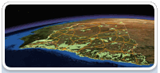
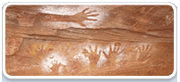
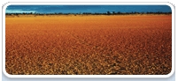
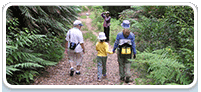
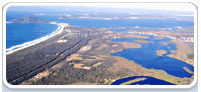

Loading ...
Browse our website for maps and data
What’s new

- The new maps and data portal puts our key spatial information at your fingertips.
- Suggestions? Comments? Questions? Please let us know what you think.
All themes
Air

Heritage
- Aboriginal heritage: mapping, database, predictive models, atlas of Aboriginal places
- State Heritage: Register and Inventory
Land and soil
- Soil profiles, maps
- Acid sulfate soil risk maps
- SoE report: Land
- Search for soil data
National parks
Vegetation

- Vegetation: data inventory, maps, survey plots, public registers, annual reports, types and benchmarks
- SoE report: Native vegetation
- Search for vegetation data
Waste and pollution
- POEO public register (pollution and noise control)
- Local government waste and resource recovery data
- Underground petroleum storage maps
Water and coast
- Beachwatch: data, sampling locations, annual reports
- Estuaries
- Seabed habitat mapping
- SoE report: Water
- Search for water data